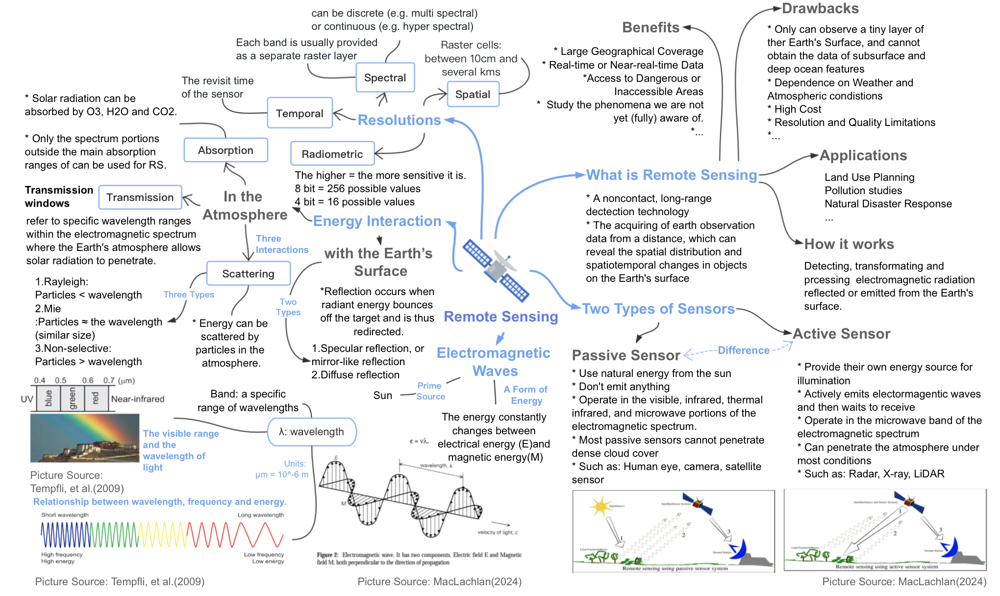
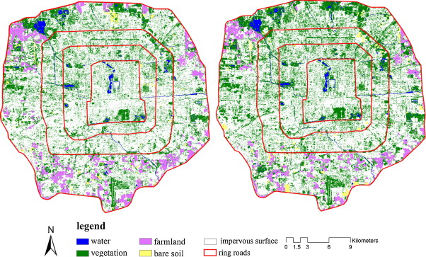

1 Week01
1.Content Summary: Intro to Remote Sensing
1.1 The Fundamental Concepts
The below mind map concludes the content of week 1. Several fundamental concepts on remote sensing are covered in the lecture, including the definitions, types, electromagnetic (EM) waves, energy interaction, and resolution. Next, I will employ Cape Town as an example to further understand and deepen this knowledge.

1.2 Basic Raster Image Processing
In this section, I employ the satellite image of Cape Town collected for Sentinel-2 L2A on 15 May 2022. European Space Agency(ESA) has proposed the Copernicus Sentinel-2 mission to observe earth by recording the wide-swath, high-resolution, multi-spectral imagery. The Sentinel-2 captures 13 spectral bands with different spatial resolutions.
To explore the features of spectral bands and their combinations, the data is resampled to 20m by considering the neighbouring pixels. Further, the bands are rearranged based on the band combinations provided by GISGeography , as shown in Figure 2.
Figure 2 combines the red, green, and blue channels, reflecting an image similar to what the eye sees. The colour infrared adopts the near-infrared (B8) band to capture chlorophyll, showing healthier vegetation with darker red.

As shown in Figure 3, the eastern peninsula displays a large area of darker red, showing a dense vegetation coverage. In addition, the urbanised areas embody white and grey.

Figure 4 embodies a combination for agriculture. Similar to Colour Infrared, B8 is employed to monitor vegetation health. Combined with the shortwave Infrared band (B11) being sensitive to moisture, this combination is beneficial for monitoring vegetation. Thus, the figure displays healthier and more hydrated vegetation with bright green. In addition to vegetation, B11 also provides information about surface features. It mainly reflects that the bare soil area in the northeast corner of Cape Town reflects a slight red element. Moreover, the urbanised area appears blue.

2.Application
2.0 The Applications in Urban Studies
Remote sensing imagery from satellites has been widely adopted in different fields, including Military Applications, Environmental Monitoring, Agriculture Surveys, Disaster Response, Urban Planning and Development, etc. Based on my background in urban planning, this section will discuss the application of remote sensing in urban studies.
In recent decades, urban areas have experienced unprecedented rapid growth. Inevitably, the speed and scale of urbanisation pose challenges, including urban land consumption, resource depletion (such as energy and water), greenhouse gas emissions, public health, etc. To address these challenges, scholars and policymakers have widely applied remote sensing as a useful tool for capturing urban environmental data. The application of urban remote sensing mainly focuses on the three aspects: 1. Observing or predicting land-use and land-cover change; 2. Monitoring the urban environment; 3. Observing human activities.
This section will demonstrate how remote sensing tools can provide valuable information for urban research and discuss the advantages and disadvantages of their application in this field.
2.1 Advantages
Based on its features of wide area coverage and repeated cycles, remote sensing can measure a regional or continental scale of urban environmental conditions and quantify changes in those conditions over time. The primary focus of this application lies in studying urban land cover and land use changes. The application is evident in the study of Wang et al.(2012), who adopted the Landsat TM/ETM+ to track China’s urban expansion from 1990 to 2010. Similarly, Zhou et al.(2018) explored the global urban dynamics from 1992 to 2013 using nighttime light (NTL) observations from DMSP/OLS. Furthermore, the Landsat dataset was also employed by Wang(2020) to predict land use and land cover changes in Kathmandu, Nepal. These studies underscore the feasibility of remote sensing for studying changes in land use and land cover at wide temporal and geographical scales.
Secondly, remote sensing provides high-resolution imagery data, which is conducive to effectively identifying the elements of urban environments. The application is evident in the study of Qian et al.(2015), which examines the spatial pattern of green space and its changes in Beijing using satellite images with 2.5m spatial resolution, as shown in Figure(4). In addition, the QuickBird satellite provided very high-resolution imagery to the study of Kit, Lüdeke and Reckien(2012), which was employed to identify urban slums in Hyderabad, India.

The images from 2005 and 2009 were obtained from Systeme Probatoire d’Observation dela Tarre(SPOT-5) and Advanced Land Observation Satellite(ALOS), respectively. The images were reprocessed to obtain multispectral images with 2.5 m spatial resolution.
There are two examples of the application in terms of observing human activities. Based on the two advantages mentioned above, remote sensing is considered as a supplementary tool for demographic, socioeconomic, and health investigations that are constrained in their geographical scope (Zhu et al., 2019). Regarding the social equity aspect, Kuffer et al. (2018) reported the disparity in access to street lighting between non-deprived built-up areas and slums by using NTL images and slum boundary data. In terms of public health, the Landsat-8 dataset and demographic distribution data were employed to assess the impact of urban heat islands on human health (Sagris and Sepp, 2017).
2.2 Disadvantages
Although the advantages of remote sensing prove that it can be widely used in urban research, there are still drawbacks in its application. In their study of slums, Mahabir et al. (2018) state that remote sensing data can be used to identify the physical features of environments, while it is difficult to capture the characteristics of socioeconomic and cultural aspects. Thus, capturing a holistic understanding by integrating remote sensing data and socio-cultural datasets is essential. Besides, Bianchetti and MacEachren (2015) mentioned a misunderstanding that remote sensing images authoritatively and objectively represent the real world. However, the interpretation of remote sensing images requires analysts to draw on their knowledge, experience, and cognitive processes to obtain insights from the visual clues in the images, revealing the nature of subjectivity (White, 2019). Although scholars have adopted machine learning methods, such as convolutional neural networks (CNNs), to interpret and classify remote sensing images, the complexity of this process has become a significant obstacle in its application to urban studies.
3.Reflection
Remote sensing provides multiple datasets, which creates possibilities for exploring urban studies. Exciting is the potential synergy between remote sensing data and socioeconomic indicators, presenting an avenue for exploring spatial heterogeneity. It may be included in my future research. However, the drawbacks also suggest that as a researcher of urban studies, I need to think carefully when using this data. This entails thoughtful decisions regarding selecting remote sensing data, processing methods, analytical approaches, and result interpretation.
My previous studies focused on applying Geographic Information Systems (GIS) with vector data. Over the next few weeks, exploring the knowledge of remote sensing will allow me to integrate these two technologies, which can enhance my ability in data acquisition and spatial analysis. I look forward to learning about remote sensing in the coming weeks. :)
4.Reference
Bianchetti, R. and MacEachren, A. (2015). ‘Cognitive Themes Emerging from Air Photo Interpretation Texts Published to 1960’. ISPRS International Journal of Geo-Information, 4 (2), pp. 551–571. doi: 10.3390/ijgi4020551.
Guo, Q., Su, Y. and Hu, T. (2023). ’ The Origin and Development of LiDAR Techniques’. in LiDAR Principles, Processing and Applications in Forest Ecology. Elsevier, pp. 1–22. doi: 10.1016/B978-0-12-823894-3.00001-3.
EARTHDATA(no date) What is Remote Sensing? Available at: https://www.earthdata.nasa.gov/learn/backgrounders/remote-sensing (Assessed: 13 January ,2024)
Kit, O., Lüdeke, M. and Reckien, D. (2012). ‘Texture-based identification of urban slums in Hyderabad, India using remote sensing data’. Applied Geography, 32 (2), pp. 660–667. doi: 10.1016/j.apgeog.2011.07.016.
Kuffer, M., Pfeffer, K., Sliuzas, R., Taubenbock, H., Baud, I. and Van Maarseveen, M. (2018). ‘Capturing the Urban Divide in Nighttime Light Images From the International Space Station’. IEEE Journal of Selected Topics in Applied Earth Observations and Remote Sensing, 11 (8), pp. 2578–2586. doi: 10.1109/JSTARS.2018.2828340.
MacLachlan, A.(2024) Remotely Sensing Cities and Environments Lecture 1: An Introduction to Remote Sensing. Available at:https://andrewmaclachlan.github.io/CASA0023-lecture-1/#1 (Assessed: 13 January ,2024)
Mahabir, R., Croitoru, A., Crooks, A., Agouris, P. and Stefanidis, A. (2018). ‘A Critical Review of High and Very High-Resolution Remote Sensing Approaches for Detecting and Mapping Slums: Trends, Challenges and Emerging Opportunities’. Urban Science, 2 (1), p. 8. doi: 10.3390/urbansci2010008.
Mertes, C. M., Schneider, A., Sulla-Menashe, D., Tatem, A. J. and Tan, B. (2015). ‘Detecting change in urban areas at continental scales with MODIS data’. Remote Sensing of Environment, 158, pp. 331–347. doi: 10.1016/j.rse.2014.09.023.
Qian, Y., Zhou, W., Li, W. and Han, L. (2015). ‘Understanding the dynamic of greenspace in the urbanised area of Beijing based on high resolution satellite images’. Urban Forestry & Urban Greening, 14 (1), pp. 39–47. doi: 10.1016/j.ufug.2014.11.006.
Sagris, V. and Sepp, M. (2017). ‘Landsat-8 TIRS Data for Assessing Urban Heat Island Effect and Its Impact on Human Health’. IEEE Geoscience and Remote Sensing Letters, 14 (12), pp. 2385–2389. doi: 10.1109/LGRS.2017.2765703.
SpatialPost (2023) Exploring the Pros and Cons: Advantages and Disadvantages of Remote Sensing. Available at: https://www.spatialpost.com/advantages-and-disadvantages-of-remote-sensing/ (Assessed: 13 January ,2024)
Tempfli, K. et al. (2009) Principles of remote sensing: an introductory textbook. Fourth Edition. Enschede: ITC.
The European Space Agency (no date) Sentinel-2: Colour vision for Copernicus. Available at: https://www.esa.int/Applications/Observing_the_Earth/Copernicus/Sentinel-2#:~:text=The%20Copernicus%20Sentinel%2D2%20mission,of%20our%20land%20and%20vegetation. (Assessed: 13 January ,2024)
Wang, L., Li, C., Ying, Q., Cheng, X., Wang, X., Li, X., Hu, L., Liang, L., Yu, L., Huang, H. and Gong, P. (2012). ‘China’s urban expansion from 1990 to 2010 determined with satellite remote sensing’. Chinese Science Bulletin, 57 (22), pp. 2802–2812. doi: 10.1007/s11434-012-5235-7.
Wang, S. W., Gebru, B. M., Lamchin, M., Kayastha, R. B. and Lee, W.-K. (2020). ‘Land Use and Land Cover Change Detection and Prediction in the Kathmandu District of Nepal Using Remote Sensing and GIS’. Sustainability, 12 (9), p. 3925. doi: 10.3390/su12093925.
White, A. R. (2019). ‘Human expertise in the interpretation of remote sensing data: A cognitive task analysis of forest disturbance attribution’. International Journal of Applied Earth Observation and Geoinformation, 74, pp. 37–44. doi: 10.1016/j.jag.2018.08.026.
Zhou, Y., Li, X., Asrar, G. R., Smith, S. J. and Imhoff, M. (2018). ‘A global record of annual urban dynamics (1992–2013) from nighttime lights’. Remote Sensing of Environment, 219, pp. 206–220. doi: 10.1016/j.rse.2018.10.015.
Zhu, Z., Zhou, Y., Seto, K. C., Stokes, E. C., Deng, C., Pickett, S. T. A. and Taubenböck, H. (2019). ‘Understanding an urbanizing planet: Strategic directions for remote sensing’. Remote Sensing of Environment, 228, pp. 164–182. doi: 10.1016/j.rse.2019.04.020.